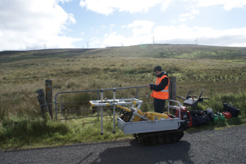

This is our fault!
Project aims
This was a project onshore UK for a Platinum Group Metals (PGM) company to help them better delineate the mineral zones and structures on some of their exploration blocks.
Exploration/Project challenges
The challenge for this project was two-fold:
1) Can ADR penetrate through hard igneous rocks, such as basalt and dolerite?
2) Can ADR find faults in the subsurface (which would help mineral geologists potentially find sources of mineralisation)?
Adrok’s Dielectric results
Adrok conducted its usual suite of scans: PScans, WARRs and Stares.
The WARR scans, which produced the dielectric logs, should the best results for finding faults. The premise of Adrok’s fault-picking was that the high dielectric peaks showed wet layers in the ground, which Adrok suspected were water-filled fault zones. The diagram below shows Adrok’s dielectric curves. The annotations in the diagram are the client’s notes of where the core samples were crumpled due to wetness.
The high dielectrics verified by client from core inspection to be broken ground, very broken ground or faulting (caused by moisture)
The graphs overleaf show Adrok’s ADR spectral curves for energy and frequency responses from the subsurface, with depth; along with the dielectric logs. The annotations show Adrok’s interpretations of groupings of different rock layers. This was later corroborated from our client’s drill logs.
From these results, both Adrok and our Client were satisfied that ADR managed to (a) find faults and (b) propagate through hard rock sequences.